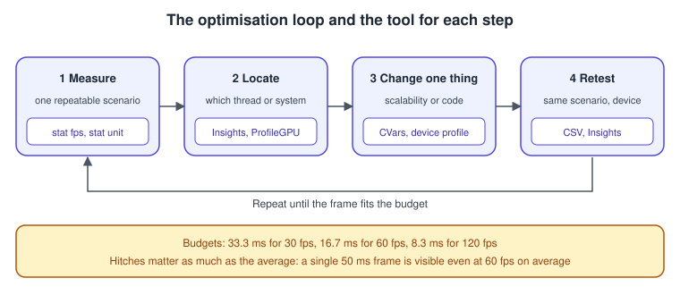
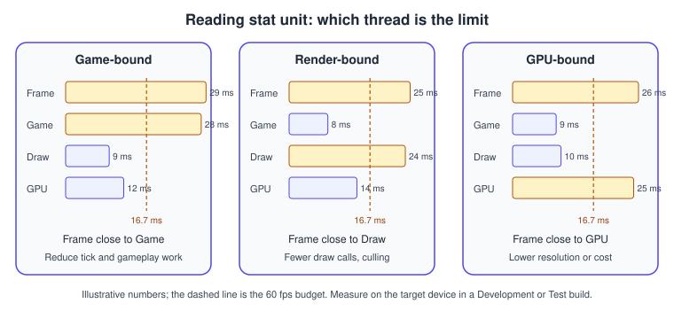
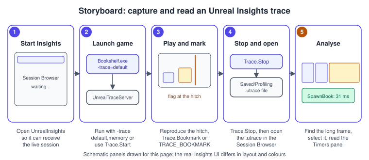
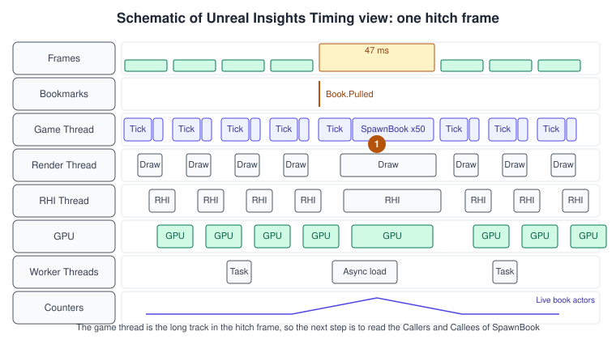

Profiling and Optimization
|
This content was generated with the assistance of AI and should be verified against the official documentation before being relied on in production. |
A game that runs at 60 frames per second on the developer’s desktop and hitches on a phone is a profiling problem, not a guessing game. Unreal Engine ships a layered set of tools for it: on-screen stat commands for a first look, Unreal Insights for a frame-by-frame recording of every thread, memory and asset load, GPU profiling commands and a CSV profiler for automated runs. This page explains each tool, how to read the numbers, which engine settings to change when a number is bad, and how to instrument the Bookshelf’s own code.
The facts on this page were checked in November 2026 against the Unreal Engine 5.8 documentation (5.8 was released on 2026-06-17; the latest hotfix found is 5.8.4). The commands run in the editor and in Development and Test builds of a packaged game on Windows, macOS, Linux and, with extra setup, Android and iOS. The general theory of frame budgets, CPU-bound and GPU-bound work is on Performance and Profiling; the same task in other engines is on Unity: Profiling and Optimization, Debugging and Capture Tools for Vulkan and Debugging and Profiling Metal. Phone-specific budgets are on Android and Mobile.
The optimization loop

Epic’s recommended workflow has five steps. Measure the frame time (in the viewport menu, Show FPS and Stat > Engine). Decide whether the game is CPU-bound, GPU-bound or display-bound (limited by VSync), and also check memory, storage access and network bandwidth. Drill down: stat commands for quick checks while the game runs, Unreal Insights for frame-by-frame data and RenderDoc for single-frame graphics diagnostics. Adjust settings with console variables (CVars), config files and device profiles. Then retest on the target hardware, because the editor previews results but cannot replace the real device.
Two ground rules follow. Profiling uses the same CPU, memory and disk as the game, so it costs a little performance; meeting your target with a profiler attached leaves headroom. And consistency counts as much as the average: common budgets are 30, 60 and 120 frames per second (33.3, 16.7 and 8.3 ms), and a single long frame is felt as a hitch even when the average is fine.
Stat commands
Stat commands print live statistics in the viewport. Open the console with the tilde key (or the console command box in the editor’s Output Log) and type the command; type it again to hide it. Console commands work in the editor and in a Development or Debug build of a packaged game.
| Command | What it shows |
|---|---|
|
The frames per second counter. |
|
Frame, Game, Draw, GPU, RHIT and DynRes timings. Epic’s recommended starting point; run it in a non-debug build. |
|
A graph of the |
|
Real-time GPU statistics, cumulative and non-hierarchical, so the major categories are visible at once. |
|
General rendering statistics; a good first step for finding slow areas in the rendering process. |
|
How long the gameplay ticks take. |
|
General rendering statistics such as frame time and triangle counters (overlaps with |
|
Memory used by the engine’s subsystems. |
|
|
Source: Stat Commands in Unreal Engine
Reading stat unit

The five numbers are read against each other:
-
Frame is the total time to produce one frame. Because the Game and Draw threads synchronize before a frame ends, Frame is usually close to one of them.
-
Game is the game thread: gameplay code, Blueprint, animation updates, physics setup. If Frame is close to Game, the game thread is the bottleneck.
-
Draw is the render thread, which prepares what the GPU draws. If Frame is close to Draw, the render thread is the bottleneck.
-
GPU is the time the graphics card takes. It synchronizes to the frame, so it usually sits close to Frame; a GPU value that matches Frame while Game and Draw are low means the GPU is the limit.
-
RHIT is the RHI thread, usually close to Frame as well. DynRes shows the primary against the secondary screen percentage when dynamic resolution is enabled.
Run the editor measurement as a first look only. The editor draws its own UI and runs extra systems, so use a packaged Development or Test build, ideally on the target device, for numbers you will act on.
Source: Stat Commands in Unreal Engine
Unreal Insights
Unreal Insights is a telemetry capture and analysis suite. A project emits trace events; the Unreal Trace Server records and stores them; the Unreal Insights application analyzes and visualizes the data. The trace server is a single background instance shared by all projects. It is started automatically by UnrealTraceServer.exe and, since Unreal Engine 5.3, is available on all desktop platforms. UnrealTraceServer kill shuts it down. The recorder listens on port 1981, and the trace store saves traces as .utrace files (with .ucache companion files) in a directory you configure with Manage store settings. Sessions describe themselves, so a trace opens in a different engine version.
You can start Unreal Insights from the Trace widget in the editor’s bottom toolbar, from the prebuilt binary Engine\Binaries\[Platform]\UnrealInsights, or build it from source with the engine’s RunUBT script and the UnrealInsights target. Open a trace by double-clicking it in the Session Browser, with Open Trace or by dropping the file onto the window. A session marked LIVE can be watched while it is recorded, and several sessions can be connected at once.

-
Start Unreal Insights first, so that it can receive the live session (the recommended order on mobile).
-
Launch the game with
-traceand the channels you want (next section), or start tracing from the console withTrace.StartorTrace.File. -
Reproduce the problem. Add a bookmark where it happens (see the code below) so that it is easy to find.
-
Stop with
Trace.Stopor by closing the game. The trace is inSaved/Profilingfor file traces. -
Open the trace, select the long frame in the Frames panel and read the tracks and the Timers panel for that time region.
Source: Unreal Insights in Unreal Engine
Channels, command line and console commands
Events are grouped in channels, and by default channels are disabled and must be opted into. A channel set is a comma-separated list; plural forms are deduced, so bookmark and bookmarks are the same. Presets can be defined in the [Trace.ChannelPresets] config category. The documented command-line options are:
| Option | Behavior |
|---|---|
|
Enables channels by group name, for example |
|
Sends the trace to an IP address; defaults to a local address. |
|
Writes the trace to a file. |
|
Size of the in-memory tail buffer in MiB (default 4). |
|
The game or editor does not start the local trace server. |
|
Emits stat named events (needed by the AssetLoadTime channel). |
|
Enables the Net and Frame channels (needed by Networking Insights). |
|
Starts tracing to the local trace server automatically (default on). |
The console commands are Trace.Send <Host> [ChannelSet], Trace.File [<File>] [ChannelSet] (default directory YourProject/Saved/Profiling; supports late connect), Trace.Start [ChannelSet], Trace.Stop, Trace.Enable and Trace.Disable (change the channel set while tracing), Trace.Pause, Trace.Resume, Trace.Status and Trace.SnapshotSend <Host> <Port> (sends the in-memory tail buffer).
Frequently used channels are CPU (timing scopes of every thread), GPU (GPU timing), Frame (frame boundaries), Bookmark, Log, Counter, LoadTime and AssetLoadTime, Memory (with MemAlloc, MemTag, Callstack and Module), Net, RDG, Task, Stats and Screenshot. Domain channels exist for Animation, Niagara, Physics, Slate, Mass, StateTreeDebug, WorldStreaming, Audio and more. Some depend on others: AssetLoadTime needs the CPU channel and -statnamedevents, Callstack needs Module for symbols, Net needs -NetTrace=1, MemTag implies the Low-Level Memory Tracker, and the ContextSwitch and StackSampling channels on Windows need administrator rights.
# Windows: record the usual set, then open the .utrace in Unreal Insights
.\Bookshelf.exe -trace=cpu,gpu,frame,bookmark,log,counter -statnamedevents -tracefile=BookshelfHitch
# Memory investigation: the memory channel must be on from process start
.\Bookshelf.exe -trace=default,memory,metadata,assetmetadataTiming Insights
Timing Insights is the main window. The Frames panel shows the frame times (click a frame to center the view on it, mouse wheel to zoom horizontally, Shift and wheel to zoom vertically). The Timing panel has one track per thread: the graph track of game and render frames, the GPU and CPU timing tracks, the I/O and asset loading tracks and the bookmarks track. The keys G, Y, U, I, O, L, B and M toggle the graph, GPU, CPU, I/O, I/O background, asset loading, bookmark and time-marker tracks, C toggles the compact mode, V hides empty timelines and X changes the event depth limit. Select a time region and the Timers and Counters views summarize it; the callers and callees views show where a timer is called from and what it calls.

The reading order is always the same. Find the tall bar in the Frames track. Check the Game Thread track for a long scope; if the game thread is short, look at the Render Thread, then the GPU track. A render thread that is idle while the game thread is busy confirms a game-thread limit. Worker thread tracks show asynchronous work such as asset loading and tasks that overlap with the frame.
Memory Insights and the Low-Level Memory Tracker
Memory Insights records every allocation, reallocation and free and rebuilds memory usage during analysis, including call stacks. The memory channel must be active from the start of the process, so use -trace=default,memory at launch (adding metadata,assetmetadata splits the allocations by asset and class name); packaged builds must be Development builds. The window has graph tracks (total allocated memory, live allocation count, allocation and free events), an Investigation tab that runs allocation queries, an LLM Tags tab for grouping and an allocation table you can group by tag, asset, class name, callstack or size, filter and export as CSV or TSV.
| Times chosen | Queries |
|---|---|
One (A) |
Active allocations, before, after. |
Two (A, B) |
Decline, Growth, Growth Vs Decline, Free Events, Alloc Events, Short Living Allocs, Long Living Allocs. |
Three (A, B, C) |
Memory Leaks, Limited Lifetime, Decline of Long Living Allocs. |
Four (A to D) |
Specific Lifetime. |
Growth Vs Decline between two points is the quickest way to see what a level load keeps. The Low-Level Memory Tracker (LLM) underlies the tags: it assigns every engine allocation to a category once, so the category totals sum to the total memory used. stat LLM and stat LLMFULL show the values in game, and -LLMCSV writes them to a CSV file under Saved/Profiling/LLM. LLM has its own overhead (the documentation mentions 100 MB or more, so it advises large-memory mode on consoles) and is compiled out of Test and Shipping builds. Android callstack tracing in Memory Insights is supported since Unreal Engine 5.4.
Profiling an Android device
On Android the command line goes into a file on the device. Create an empty UECommandline.txt in the engine’s Engine/Build/Android/UnrealGame folder, put the arguments in it, and push it to the device with the Android file tool (the guide uses UnrealAndroidFileTool with its shell and push commands; the Android File Server plugin is the alternative to adb). The guide’s base content is:
../../../Bookshelf/Bookshelf.uproject -tracehost=127.0.0.1 -cpuprofilertraceand for load-time data it adds -filetrace -loadtimetrace -statnamedevents -trace=Bookmark,Frame,CPU,GPU,LoadTime,File. Epic’s reference says -cpuprofilertrace and -loadtimetrace were removed as command-line options in favor of their channel forms, so prefer -trace= with the channel names. Start UnrealInsights.exe before launching the game, select the session marked LIVE in the Session Browser and open it. Recorded traces are pulled from the device with the tool’s pull command. For metrics the engine does not record (CPU scheduling, thermal throttling) Epic recommends platform-native tools such as Perfetto and Android Performance Analyzer.
GPU profiling
When stat unit points at the GPU, two commands break the frame down. ProfileGPU takes a one-off measurement of the GPU timings of the view being rendered and shows them in a window or in the log; the cvars r.ProfileGPU.Pattern and r.ProfileGPU.Sort filter and order the text dump. stat gpu is the real-time version: cumulative and non-hierarchical, so the main categories are visible at a glance. Both are distorted by overlapping work until asynchronous compute is turned off with r.RDG.AsyncCompute 0, so disable it while measuring and turn it back on afterwards.
Other tools that Epic’s rendering optimization page lists are the level editor visualization modes (the Shader Complexity view mode, reachable with Alt+8, shows material cost on screen), RenderDoc for a single-frame GPU capture, the GPUDump Viewer for intermediate render graph textures and buffers, the Render Resource Viewer for GPU memory allocation and the Primitive Debugger for runtime primitive information. The Insights GPU and RDG channels put GPU passes on the timeline next to the CPU threads.
What to try when the GPU is the limit, in order of effect: render at a lower resolution and upscale (Screen Percentage with temporal upscaling, or dynamic resolution), reduce light and shadow cost, simplify expensive materials, and use Nanite for high object counts and pixel-scale detail. r.ScreenPercentage accepts 10 to 100 (-1 also means 100), renders the scene at a lower resolution and upscales it; the user interface is not affected. Lumen and MegaLights need hardware that supports Shader Model 6 (Epic names RX 6000, Arc A and RTX 2000 class cards or newer); their cost and quality controls are explained on Lighting, Lumen and MegaLights.
Instrumenting the Bookshelf
The built-in scopes already cover the engine; your own code needs scopes of its own. The Bookshelf’s AShelfActor::RefreshBooks repositions every book on the shelf, which is exactly the kind of function that grows from nine books to hundreds. The example below shows four mechanisms, all visible in the tools above: a stat group (shown with stat Bookshelf), a trace scope and bookmark for Unreal Insights, a trace counter in the Counters view and CSV stats for automated captures.
// BookshelfStats.h
#pragma once
#include "Stats/Stats.h"
// stat Bookshelf shows every stat declared against this group.
DECLARE_STATS_GROUP(TEXT("Bookshelf"), STATGROUP_Bookshelf, STATCAT_Advanced);
DECLARE_CYCLE_STAT_EXTERN(TEXT("Refresh Books"), STAT_BookshelfRefreshBooks, STATGROUP_Bookshelf, BOOKSHELF_API);// ShelfActor.h
#pragma once
#include "CoreMinimal.h"
#include "GameFramework/Actor.h"
#include "ShelfActor.generated.h"
class ABookActor;
class UInstancedStaticMeshComponent;
UCLASS()
class BOOKSHELF_API AShelfActor : public AActor
{
GENERATED_BODY()
public:
AShelfActor();
/** Re-place every book in its slot. Instrumented for stat, Insights and CSV. */
UFUNCTION(BlueprintCallable, Category = "Bookshelf")
void RefreshBooks();
/** Console helper: fill the shelf with Count display-only books. */
UFUNCTION(Exec)
void FillWithDisplayBooks(int32 Count);
protected:
UPROPERTY(VisibleAnywhere, Category = "Bookshelf")
TObjectPtr<UInstancedStaticMeshComponent> DisplayBooks;
UPROPERTY()
TArray<TObjectPtr<ABookActor>> InteractiveBooks;
};// ShelfActor.cpp
#include "ShelfActor.h"
#include "Bookshelf.h"
#include "BookActor.h"
#include "BookshelfStats.h"
#include "Components/InstancedStaticMeshComponent.h"
#include "ProfilingDebugging/CountersTrace.h"
#include "ProfilingDebugging/CpuProfilerTrace.h"
#include "ProfilingDebugging/CsvProfiler.h"
#include "ProfilingDebugging/MiscTrace.h"
DEFINE_STAT(STAT_BookshelfRefreshBooks);
CSV_DEFINE_CATEGORY(Bookshelf, true);
TRACE_DECLARE_INT_COUNTER(BookshelfLiveBooks, TEXT("Bookshelf Live Books"));
AShelfActor::AShelfActor()
{
PrimaryActorTick.bCanEverTick = false;
DisplayBooks = CreateDefaultSubobject<UInstancedStaticMeshComponent>(TEXT("DisplayBooks"));
SetRootComponent(DisplayBooks);
}
void AShelfActor::RefreshBooks()
{
SCOPE_CYCLE_COUNTER(STAT_BookshelfRefreshBooks);
TRACE_CPUPROFILER_EVENT_SCOPE(AShelfActor::RefreshBooks);
CSV_SCOPED_TIMING_STAT(Bookshelf, RefreshBooks);
TRACE_BOOKMARK(TEXT("Bookshelf.RefreshBooks"));
int32 Slot = 0;
for (ABookActor* Book : InteractiveBooks)
{
if (IsValid(Book))
{
const FName SocketName(*FString::Printf(TEXT("BookSlot_%d"), Slot++));
Book->AttachToComponent(DisplayBooks,
FAttachmentTransformRules::SnapToTargetNotIncludingScale, SocketName);
}
}
const int32 Live = InteractiveBooks.Num() + DisplayBooks->GetInstanceCount();
TRACE_COUNTER_SET(BookshelfLiveBooks, Live);
CSV_CUSTOM_STAT(Bookshelf, LiveBooks, Live, ECsvCustomStatOp::Set);
UE_LOG(LogBookshelf, Verbose, TEXT("RefreshBooks placed %d books"), Live);
}
void AShelfActor::FillWithDisplayBooks(int32 Count)
{
// One component and one draw call per mesh and material instead of one actor per book.
DisplayBooks->ClearInstances();
DisplayBooks->PreAllocateInstancesMemory(Count);
constexpr float Spacing = 4.f;
for (int32 Index = 0; Index < Count; ++Index)
{
const FTransform Transform(FRotator::ZeroRotator, FVector(Index * Spacing, 0.f, 0.f));
DisplayBooks->AddInstance(Transform, /*bWorldSpace=*/false);
}
RefreshBooks();
}Source: Developer Guide to Tracing in Unreal Engine, Unreal Engine Stats System Overview and API reference: UInstancedStaticMeshComponent
The DEFINE_STAT needs the extern declaration in the header, and DECLARE_CYCLE_STAT_EXTERN exposes the stat to other files of the module. TRACE_CPUPROFILER_EVENT_SCOPE takes an identifier and shows the scope under that name in the Timing view; the _STR variant takes a string and costs a little more when the string is built at run time. A bookmark is for infrequent state changes, and per-frame data belongs in a timer or counter. In a build where the profiler macros are compiled out (Shipping), all of these expand to nothing. Run FillWithDisplayBooks 500 from the console to make the scenario reproducible and compare it before and after the change.
The stat group and the trace counter appear as follows: in the viewport with stat Bookshelf (the cycle stat’s time), in Insights under Counters for the selected time region and in the Timers panel as the scope AShelfActor::RefreshBooks.
CSV Profiler
The CSV Profiler writes a small CSV file with per-frame values, which makes it the right tool for automated performance tests on a build farm. In the version of the documentation that was reachable, a capture is started and stopped with csvprofile start and csvprofile stop (a fixed number of frames with csvprofile frames=N, or -csvCaptureFrames=N from the command line), the output goes to Saved/Profiling/CSV, nothing is written to disk until the capture ends (so very long captures with many stats use memory) and the profiler works in all builds except Shipping. The 5.8 release notes add an experimental Horde view of the trends from performance tests (the Automated Performance Tests framework and the Perf Report Tool) covering GPU and CPU times, memory and hitches. The CSV_SCOPED_TIMING_STAT and CSV_CUSTOM_STAT lines above are what feed it.
Scalability and device profiles
Scalability groups bundle many CVars behind a quality level. The groups documented on Epic’s reference are sg.PostProcessQuality, sg.ShadowQuality, sg.TextureQuality, sg.EffectsQuality and sg.FoliageQuality, each from 0 (low) to 3 (epic); the page also covers r.PostProcessAAQuality and r.ScreenPercentage. The engine’s defaults for each level are in Engine/Config/BaseScalability.ini and a project overrides them in its own Config/DefaultScalability.ini (the page’s example adjusts foliage density per level; foliage static meshes need Enable Density Scaling turned on). Typing a group name without a value in the console prints its current value and where it was last set.
; Config/DefaultScalability.ini
[ShadowQuality@2]
r.Shadow.MaxResolution=2048
[FoliageQuality@1]
r.Foliage.DensityScale=0.5Device profiles pick the scalability level and CVars for a class of hardware automatically; the mechanism, with its matching rules and inheritance, is explained on Android and Mobile and applies on desktop and console in the same way. A profile can also set r.MobileContentScaleFactor or texture LOD groups per memory bucket.
Content-side fixes
-
Many identical meshes. Use instanced static mesh components instead of one actor per mesh, as the example above does. A hundred actors cost a hundred tick registrations, transform updates and often draw calls; instances share one.
-
Tick. Set
bCanEverTick = falseon actors that do not need it (asAShelfActordoes), reduce tick rates, and prefer events and timers over polling. Check the cost withstat game. -
Visibility. Occlusion culling, LODs, Nanite for high-density static geometry and texture streaming are the main content tools Epic lists. Precomputed visibility volumes help on mobile.
-
Spawning. A burst of
SpawnActorcalls in one frame is a typical hitch; spread spawns over frames, pool actors, or load assets asynchronously through soft references (see Data-Driven Gameplay). -
Materials. Expensive materials show up as GPU time and as shader complexity; simplify them or use quality switches, and use material instances rather than unique materials.
-
Textures. Right-size textures and use
ListTexturesto see where the memory goes.
Common mistakes
-
Profiling in the editor and trusting the numbers. Use a packaged Development or Test build on the target device.
-
Changing five things at once. Change one thing and retest the same scenario.
-
Judging by the average frame rate. Look at the worst frames and the frame time graph.
-
Leaving
stat startfilerunning. The capture keeps growing after Play in Editor ends; always runstat stopfile. -
Turning on the memory channel late. Memory Insights needs it from process start; a late connection cannot trace allocation events.
-
Leaving LLM or heavy trace channels on in a benchmark. They add overhead; record the channels you need.
-
Measuring GPU passes with async compute on. The timings are distorted until
r.RDG.AsyncCompute 0. -
Leaving the trace server unused. A forgotten server process holds port 1981 and trace files;
UnrealTraceServer killstops it. -
Optimizing without a budget. Decide the target (30, 60 or 120 fps) and the target device first.
Performance notes
-
Start with
stat unitto find the limiting thread, then use the tool for that thread: Insights for the CPU threads,ProfileGPUandstat gpufor the GPU, Memory Insights for memory. -
Use bookmarks and named scopes liberally in your own code; they cost nothing in Shipping and save hours in Insights.
-
Keep a fixed test scenario (a level, a camera path, a seed) so that numbers are comparable between builds, and record it with the CSV Profiler in continuous integration.
-
Rendering below native resolution is the most effective single GPU lever; check DynRes in
stat unitwhen dynamic resolution is on. -
Cook and ship only what the game uses; unused plugins and shader permutations cost memory and load time.
What changed recently
| Version | Change |
|---|---|
UE 5.3 |
The Unreal Trace Server is enabled on all desktop platforms. |
UE 5.4 |
Android callstack tracing is supported in Memory Insights. |
UE 5.8 (2026-06-17) |
World Partition Insights adds streaming debugging tools to Insights and the editor. Audio Insights is production ready (editor and standalone through Insights). Insights gains shortcuts for the longest, previous and next instance of an event, jump-to-frame and jump-to-time dialogs, annotations stored in a shareable sidecar file, a snapshot hitches feature that writes trace data and screenshots when hitches are detected, a crash option that includes a trace snapshot (Windows only), secure SSL trace connections with three modes and a MessagingInsights plugin. |
Where the books are outdated
The debugging, code quality and optimisation chapters of the books predate most of the tools above. Unreal Development Kit Game Programming with UnrealScript: Beginner’s Guide by Rachel Cordone (2011, chapter 9) debugs with UnrealScript logging and the UDK console, in an engine that no longer exists. Unreal Engine 5 Game Development with C++ Scripting by Zhenyu George Li and E. Wyn Roberts (2023, chapters 9 and 12) targets Unreal Engine 5.0.
| In the books | Today |
|---|---|
UDK console logging and UnrealScript debugging |
C++ and Blueprints with |
Stat commands and the Session Frontend profiler as the main tools |
Still available, but Unreal Insights with trace channels is the primary tool; |
Engine 5.0 tooling |
Trace server on every desktop platform (5.3), Android callstack tracing in Memory Insights (5.4), World Partition Insights, snapshot hitches, TraceQuery and SSL trace connections (5.8) |